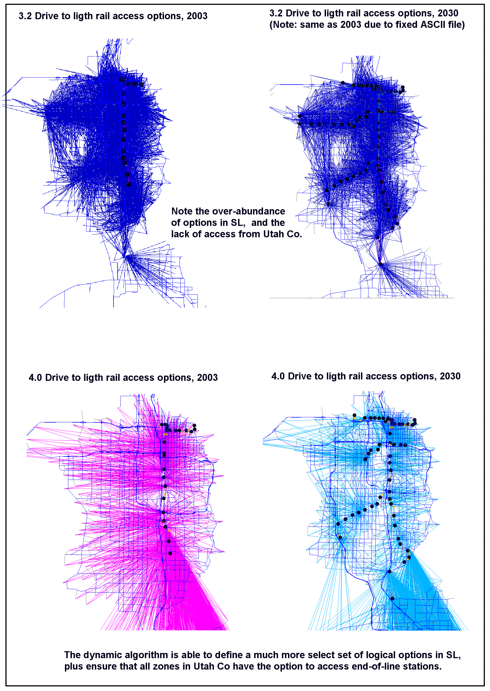

Version 4.2.0 - What’s New?
Short trip vs. Long trip improved path choice methodology.
The highway route choice methodology (assignment) was upgraded to assign long trips differently than short trips. Previous versions required all drivers to select a path to their destination by a combination of shortest distance and shortest time. To obtain calibration, path preference was weighted toward shortest distance. Such a setting can make the model insensitive to how certain trips would react to faster-but-longer opportunities. Other cities that have experienced issues like this have separated short trips from long trips and assigned long trips primarily by shortest time.
Short neighborhood-type trips tend to select the direct path between their origin and destination, though many will select an alternate if the preferred path is overly delayed. Many people on longer commute-type trips tend to study their options more and select a path likely to save them the most time, almost without regard to out-of-direction elements in the path.
In 4.2, trip lengths over 10 miles are considered long trips, and path choice is made by shortest time only. Shorter trip paths are weighted 65% on shortest distance, 35% on shortest time. Global calibration statistics are generally improved over 3.2, and a number of localized, network “hot-spots” are also improved. Since the path choice methodology is significantly different, volume projections on any given link may also be a fair amount different. A number of “dial settings” were changed to obtain calibration. Included are resetting geographic link penalties, functional type free-flow speeds, and volume-delay curves.
Specific trip-table for the Cabella’s sporting goods retailer in Lehi.
There has been some concern regarding the impacts of Cabella’s being constructed in Lehi. It is said to be large enough and unique enough to draw trips from all over the region and even high numbers from outside the region. The regular gravity model will not model this well, considering it simply another retailer and sending trips to it primarily from within northern Utah County and southern SL County. In 4.2, its trip generation magnitude and distribution is created in an off-model spreadsheet, and the resulting trip table is fed into the model. This ensures that trips will be drawn from across the region, including Weber County and all major external stations. Thus it will have a more significant effect on roads even in these far-away places that it otherwise would have had.
Drive to transit access location improved (a 4.0 feature)
In 3.2, all PNR lots to be used in all years were coded as “higher draw” (15 minute) or “lower draw” (12 minute) ASCII files. Any zone within the max travel time was given access. We discovered this construction had numerous flaws. First, many trips in the survey drove more than 15 minutes to reach light rail (particularly from Utah Co). Next, a given zone may be within 12 minutes of as many as 8 light rail PNR lots, and the skim builder was set so as to encourage them to drive to the furthest most lot in order to minimize the time on transit. This was because when building rail-favored paths, we inadvertently avoided penalizing the drive portion of the path. Since the objective is to select a path that minimizes the weighted times, and since driving 5 miles is typically faster than riding 5-miles in the train, the path builder effectively told drivers to stay on the road as long as you can, defeating the reasons people drive to transit. This was not so much a problem with the number of trips that would access the mode as it was with selecting illogical locations to access the mode. The 4.0 model now weights the drive portion of mode-favoring, encouraging drivers to select the nearest lot.
Thus we found a 12-15 minute travel shed is too much and too little at the same time (some zones access far more PNR lots than they logically would select, and zones that would drive many miles to reach end-of-line stations don’t have the option). This manually supplied ASCII file method also requires accounting for future light-rail PNR lots even in the base year. These lots are not used by the MC model for LRT trips. They can be used for a bus trip, which is fine, but it makes the book-keeping difficult.
Version 4.0 abandons the manual method in favor of a network-based algorithm with the following steps:
ID lots on network: Modeler identifies all potential PNR lots as node attributes on the master network by a modal hierarchy: A code 80 means that in runs where commuter rail stops at that node, drive access to commuter rail should be available. Drive access is then also available to all lesser modes if they happen to stop at that node. See the table below for codes.
Confirm that lot coincides with eligible routes for scenario: Initial paths for the scenario network are built, and all transit stops are identified by node and mode. The result is a list of nodes where yes, the node was identified as an existing/potential PNR lot for that mode; and yes, that mode actually stops at that node.
Write PNR access code for most logical access point: The nearest confirmed lots to a given zone are identified, and a TP+/Voyager format PNR record is recorded for that path. For commuter rail, only the nearest 2 lots are recorded. For light rail, BRT, and express bus, it’s the nearest 3.
The results are much improved over the 3.2 method. Note that for light rail in SL County, even the western most zones can access the Sandy Trax line (not observable in 3.2), and only at lots along the same latitude. (See Figure 1).
